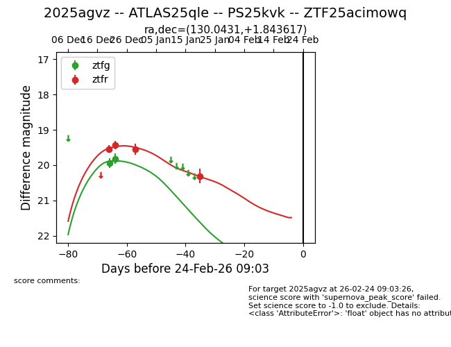
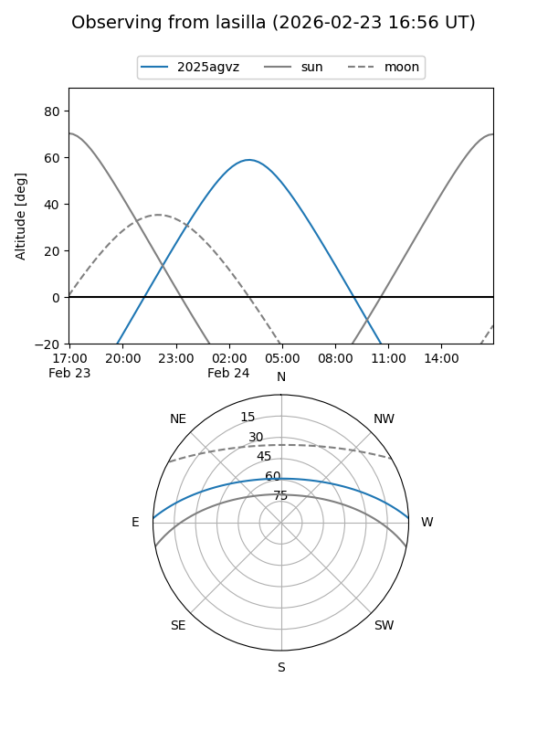
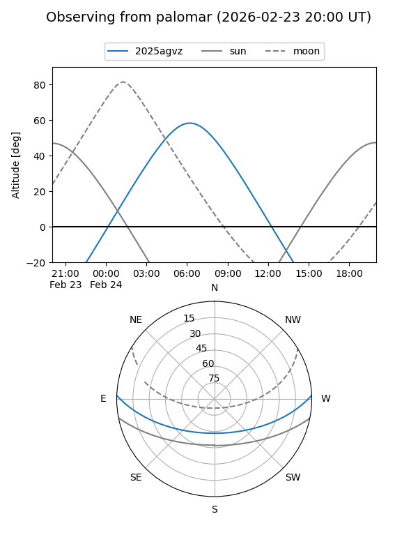
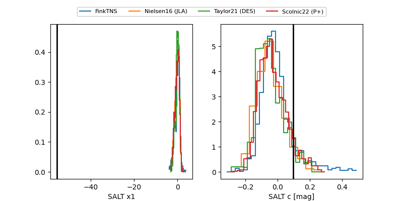

2025agvz
Target 2025agvz at 2025-12-20 13:04
Aliases and brokers:
FINK: fink-portal.org/ZTF25acimowq
Lasair: lasair-ztf.lsst.ac.uk/objects/ZTF25acimowq
ALeRCE: alerce.online/object/ZTF25acimowq
TNS: wis-tns.org/object/2025agvz
YSE: ziggy.ucolick.org/yse/transient_detail/2025agvz
alt names
ZTF25acimowq (ztf,fink_ztf)
2025agvz (tns,yse)
Coordinates:
equatorial (ra, dec) = 130.0431,+1.84362
equatorial (HMS+DMS) = 08:40:10.35,+01:50:37.02
galactic (l, b) = (224.3506,+24.90058)
Flags:
Photometry:
last ztfg=19.94, ztfr=19.54
1 ztfg, 1 ztfr detections
Lightcurve

Visibility


Additional plots
